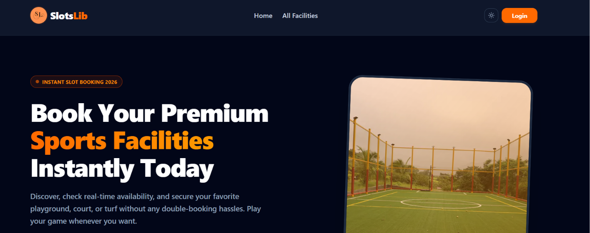
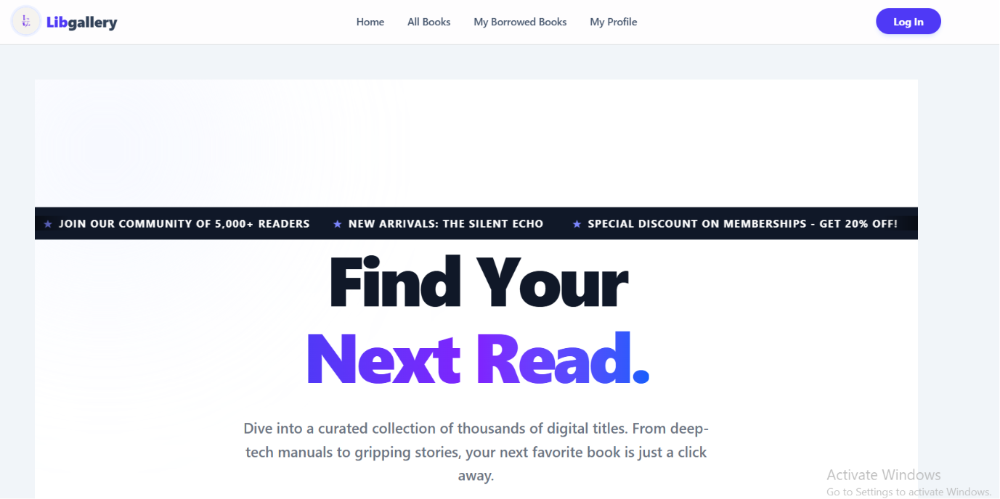
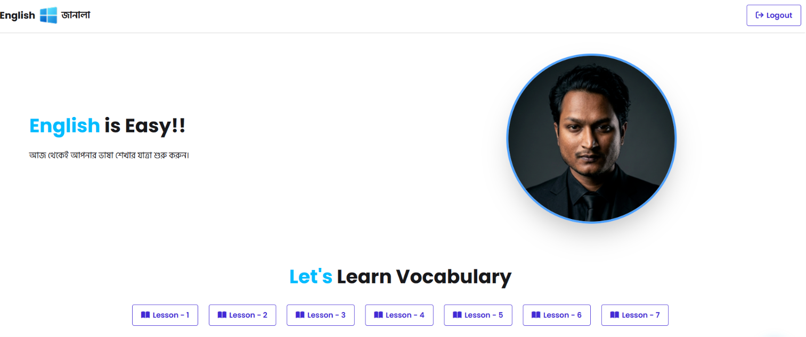

Jun 2024
Full-stack sports facility booking platform for football turfs, badminton courts, cricket grounds, and tennis courts with owner venue management. Users select date, time slot, and duration with real-time price calculation. Owners can list, update, and delete venues with automatic booking removal.
Achieved 98/100 PageSpeed Insights desktop and 99/100 mobile. LCP reduced from 2.6s to 0.6s using next/dynamic lazy-loading and 60s API caching. Implemented dark/light theme system and OpenAI chatbot integration.
Tech Stack: Next.js, React, Node.js, Express, MongoDB, Tailwind CSS, HeroUI
Skills: Full-Stack Development, Performance Optimization, Real-time Features, Authentication, API Design, Database Optimization
Live Link: SlotsLib Live Demo
GitHub: SlotsLib Repository

May 2024
Full-stack digital library platform with 100+ book catalog featuring real-time stock tracking, search functionality, and duplicate borrow prevention. Implemented real-time search by title and category filtering via Next.js server components, eliminating full-page reloads with instant result surfacing.
Achieved 98/100 PageSpeed Insights mobile and 99/100 desktop. Mobile LCP reduced from 2.7s to 2.3s using next/dynamic lazy-loading and server-side optimization.
Tech Stack: Next.js, React, Express.js, MongoDB, Tailwind CSS
Skills: Full-Stack Development, Real-time Search, Server Components, Performance Optimization, Database Design
Live Link: Libgallery Live Demo
GitHub: Libgallery Repository

Apr 2024
AI-powered English language learning platform with intelligent tutoring system powered by Google Gemma 2 model running on Cloudflare Workers serverless infrastructure. Interactive learning experience with responsive design for all devices. Frontend hosted on Vercel with edge computing backend for fast response times.
Implemented serverless architecture using Cloudflare Workers, integrated Google Gemma 2 AI model, and optimized for scalability and performance.
Tech Stack: Next.js, Cloudflare Workers, Tailwind CSS
Skills: Full-Stack Development, AI Integration, Serverless Architecture, Cloudflare Workers, LLM Integration
Live Link: English Janala Live Demo
GitHub: English Janala Repository